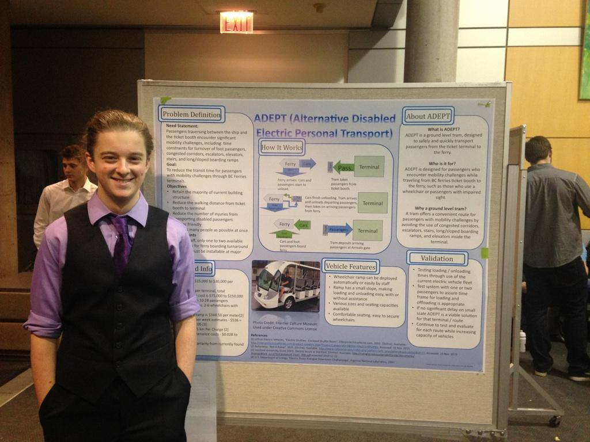
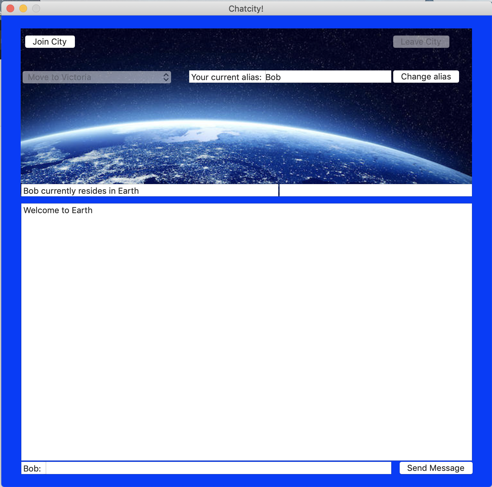
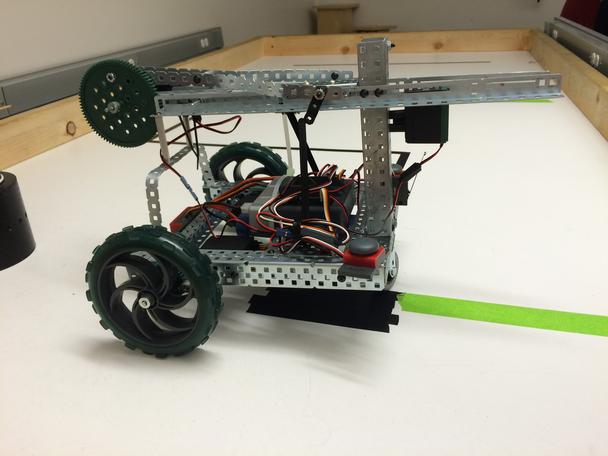

ABOUT ME
I am currently in my third year pursuing my degree in software engineering at
the University of Victoria. I have found my passion in user experience and designing user interfaces,
so this is where I am hoping to specialize.
This is my personal website to practice my web development skills and become familiar with different web
programming tools. It also serves as a place to host my currently active projects. The goal is to improve
the website alongside my skills in HTML, CSS, and JS and to highlight my projects, both past and present,
better than linkedin or my resume can.
Welcome to my website. I have a huge drive for improving usability and accessibility and advocating
for proper usability testing and design in products from the ground up. In my experience there have
been products that have little to no consideration for usability in their design. It should be obvious
and well known that retroactively dealing with any issues from mismatched requirements, bugs, or redesigns
places a cost multiplier on the work done. It is far cheaper and creates a far better product to put the
systems and tools to deal with these issues in place from the beginning. I am passionate about this message
and intend to be a strong advocate for it.
My skills are:
Technical Skills:
Python
Being the first language I learned back in highschool, I have used Python for many projects.
Most notably of late I used it in a software security class to script some encyrption/decryption exercises.
The largest project to use Python is probably Chatcity 1.0 with the use of
Python sockets and the attempted use of multithreading in Python.
C
The first language taught at the University level and a staple of many of the more
computer engineering focused classes. I have used C to program on microcontrollers,
to investigate u-threads and p-threads, and used a variant of the language (Robot C) to
program a autonomus robot to navigate it's environment and locate an IR beacon.
C++
Introduced to C++ at a Coop software developer position I was immediately intrigued by it.
To further my further my understanding of the language to ensure I wasn't just blundering through the language with future
projects I enrolled in an advanced programming techniques for C++ class at the University of Victoria. While it was probably
one of the hardest classes I have taken it was also a constant string of learning moments.
HTML
One of the more recent languages I've spent real time with
in my first year of Software Engineering at UVic there was some time spent learning
the basics of reading HTML and understanding but very little practical experience.
This website is my practical expereince proejct.
CSS
CSS goes hand in hand with HTML. My learning of CSS follows
a very similar path to HTML and is also one of the main focuses of this website.
Bash
Having not spent a lot of time writing Bash scripts, although
some would argue that that is a good thing, my experience with Bash has been more about
using terminals to experiment with other tools such as the time spent in a software security
class using the tools used to attack and defend from certain well known vulnerabilities.
SQL
Starting with my QA Co-op fiddling with SQL server instances
(mostly focused on fiddling with data to test the reliability of the systems in place)
my SQL experience has skyrocketed with the addition of a database class at UVic focused on gaining
hands on SQL programming experience.
Javascript
My introduction into Javascript was through Battlesnake. The coding
competition was my way of diving into the language and being forced to just figure it out. After
the competition in 2019 I've launched into side projects (such as this website) to attempt to gain a better
mastery of the language.
Git
Across many class projects and personal projects I've practiced increasingly with
Git and the development tools offered by both Github and Gitlab. With my latest experiences in Software Evolution
the use of Gitlab's CI's tools has become a goal for larger projects.
MY WORK
Here are some of my latest Projects.
ADEPT

In my first semester of the Software Engineering program at UVic the entire year was
tasked with desinging a solution for the lack of efficient accesibility options with
the boarding process for BC Ferries. As a member of a four person team, following the Tuckman team design cycle, we developed a solution to BC Ferries’ terminal
accessibility problem named A.D.E.P.T (Alternative Disabled Electric Personal Transport). Judged by members BC Ferries Executives
and Members of the Engineering Faculties the project won first place.
Click here to go the BC Ferries News Release for the project.
Chatcity 1.0

Early in my second year of the Software Engineering program at UVic as a part of my Software Architecture and Design class
2 other students and I were tasked with documenting, desinging, and programing a chat communication system
that used python sockets. Without any prior knowledge of network programming or the writing of web applications
we developed Chatcity. Using Python sockets, multithreading, and PyGui implemented the system on schedule and
meeting all requirements.
Click here to go the github repository for the project.
Jeff the Robot

Using Vex components, programming in robot C and as a member of a three person team designed and implemented a
prototype for an autonomous sensor cleaning deployment robot. The robot possessed mobility that would not damage
sensitive terrain, was able to detect the IR emitted by the sensor beacon and was able to deploy a weighted mock
sensor cleaner.
ONC Data Preview 2.0

Worked alongside three other engineering students in a cross-disciplinary design project. The project involved
requirements gathering and solution design for improving or replacing ONC’s Data Preview 2.0 with a more accessible
and user friendly version. The project consisted of key milestones including: a technical literature review, a feasibility study, a requirements specification document, and a final report
Click here to go the google drive for the final report from the project.